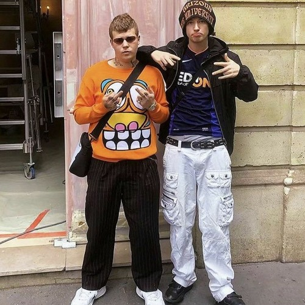
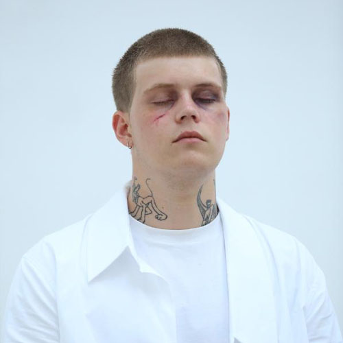
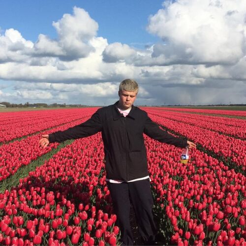
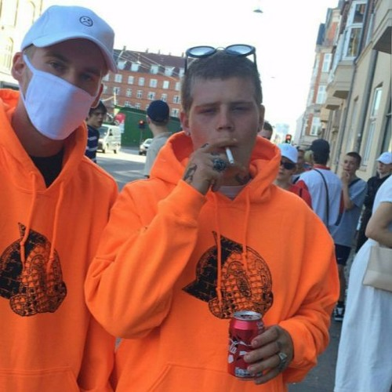
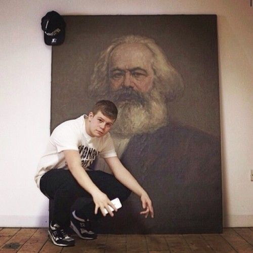

Aron Leandoer Håstad[1] (born 18 July 1996), known professionally as Yung Lean, is a Swedish
rapper, singer and songwriter. Widely cited as one of the most influential figures in the early cloud
rap
era,
Yung Lean rose to prominence in 2013 with his song "Ginseng Strip 2002", which went viral on YouTube.[2]
Later
that same year, he released his debut mixtape, Unknown Death 2002, and the following year, he released
his
debut
studio album, Unknown Memory. In 2016, Yung Lean released his second mixtape, Frost God, and his second
studio
album, Warlord.Aron Leandoer Håstad[1] (born 18 July 1996), known professionally as Yung Lean, is a
Swedish
rapper, singer and songwriter.
Songs
Title
Artist
Year
Label
Agony
Yung Lean
2017
YEAR0001
Miami Ultras
Yung Lean
2016
YEAR0001
Wooden girl
Jonatanleandoer96
2016
YEAR0001
Ginseng strip 2002
Yung Lean
2012
YEAR0001

Þetta er Yung Lean og Bladee

Hér er mynd

Hér er mynd
Hér er mynd

Hér er mynd

Hér er mynd
Håstad has been credited for being a pioneer in the emo rap, cloud rap, and soundcloud
rap
genres. In 2019, Yung Lean was awarded the Bram Stoker Medal of Cultural Achievement by the
University Philosophical Society at Trinity College, Dublin. Yung lean was also nominated for the
swedish
grammy awards.
Håstad spent his early childhood in Minsk, Belarus, where his mother moved the family so Håstad could
have a
similar childhood to her. The family returned to Sweden and settled in Stockholm when Håstad was
somewhere
between the ages of three and five. He was raised in the city's Södermalm district. In between, Håstad
was a
student at UNIS Hanoi from 6th to 10th grade. During his time in high school, Håstad often got in
trouble
for doing drugs or writing graffiti.